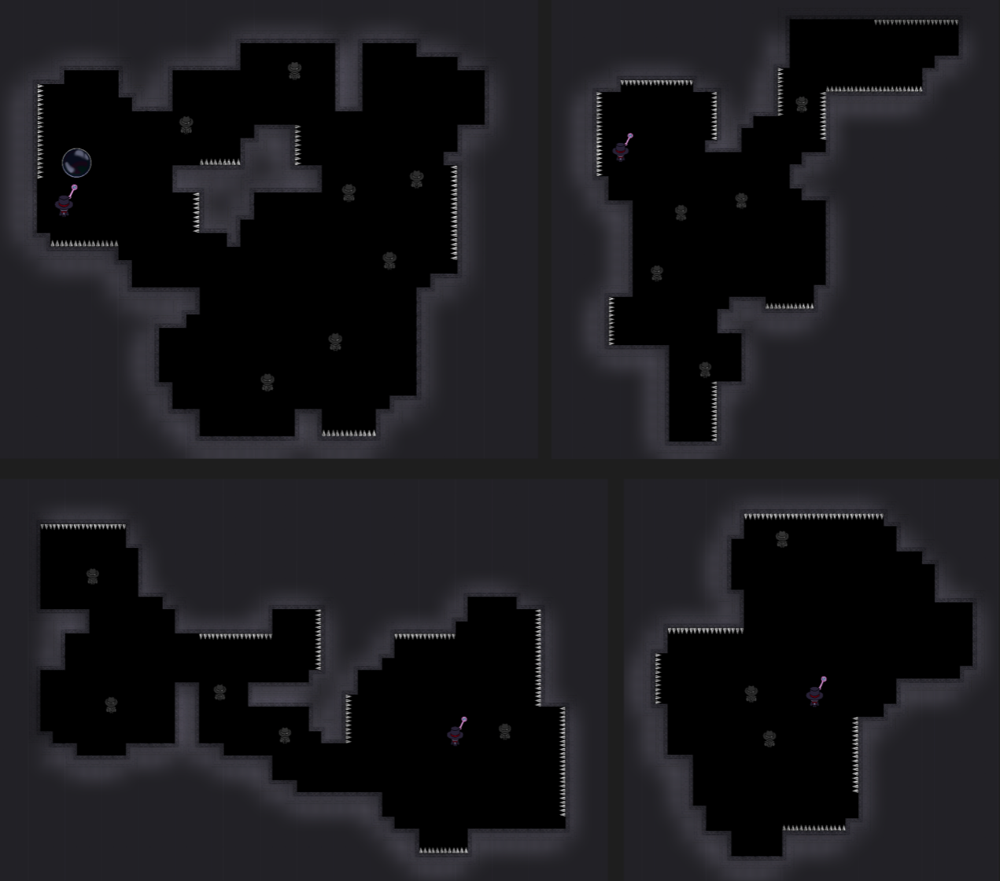
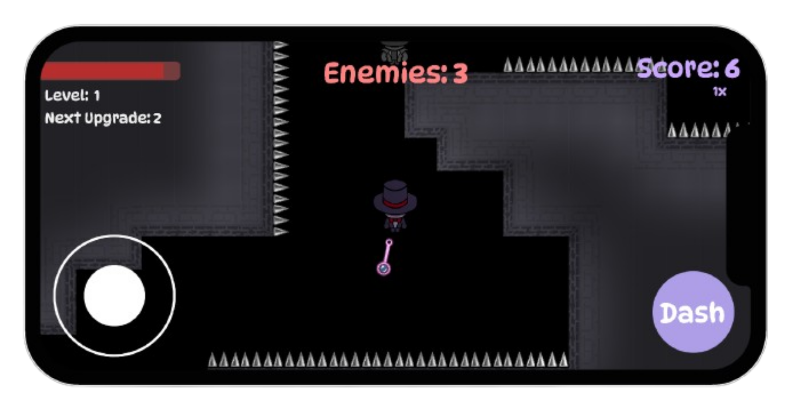

Each level is generated at runtime, using a randomized algorithm to block out the overall layout and then running cleanup code to prevent hanging blocks. Each part of the generation is parameterized so that it can be tweaked by designers to architect different types of levels.
Here's what the levels look like!

This was originally a PC-only game, but I rebuilt the input and UI systems to work smoothly with mobile too. A particular highlight was the input system, where I faced the challenge of representing 4 different input actions + mouse movement with mobile touch only. In the end, I think I came up with a pretty elegant solution!
